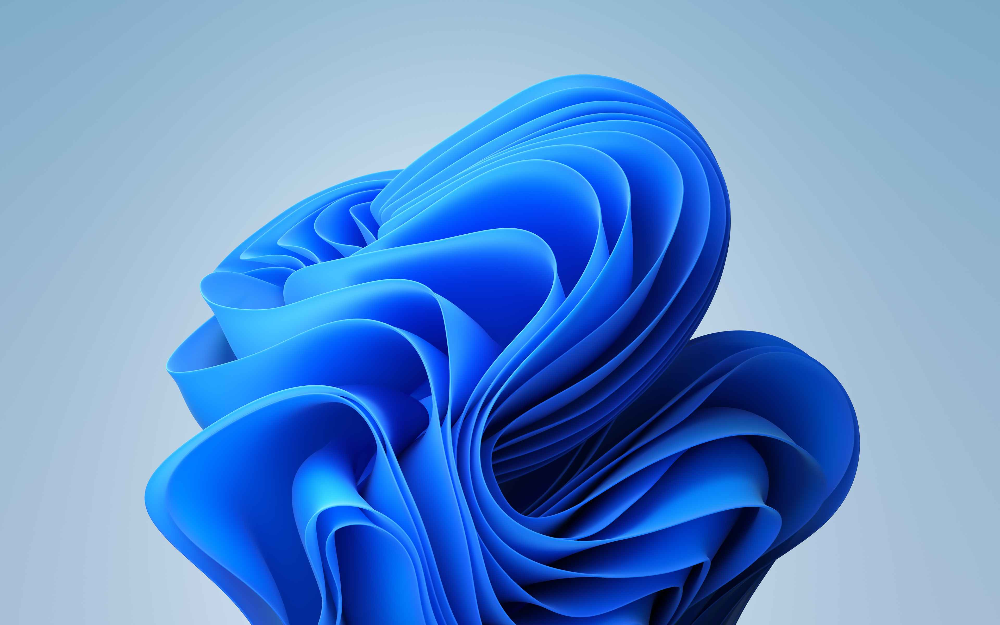

Адаптивный макет
Один и тот же макет подстраивается под телефон, планшет, ноутбук и большой монитор: меняются отступы, размер шрифта, число колонок и положение боковой панели.

Медиа-запросы
Стили переключаются на границах 600 / 768 / 1280 / 2400 px.
Изображения
Формат выбирается через srcset, retina-версия подключается для плотных экранов.
Отступы
Вместо фиксированных значений — clamp() и проценты, поэтому макет не разъезжается.